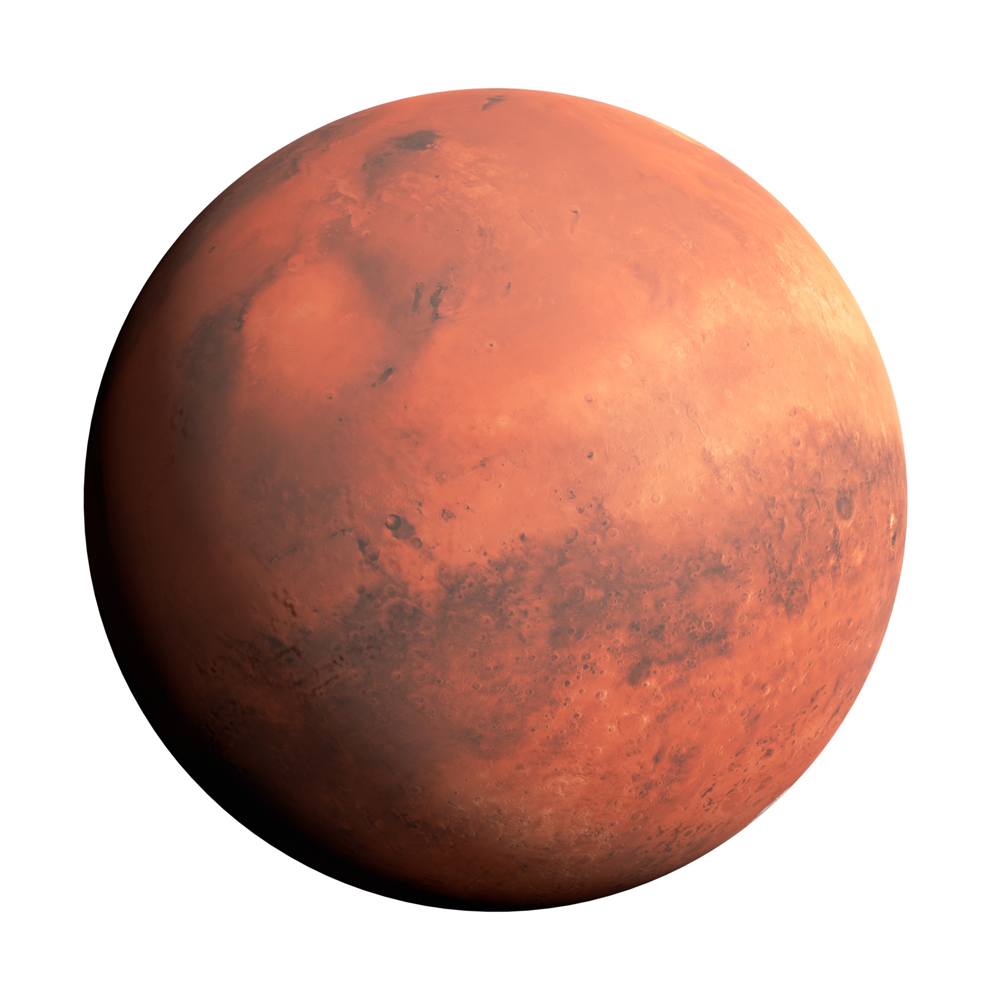

Marte
um olhar para o futuro
Nos últimos anos, a ideia de enviar humanos para Marte deixou de ser ficção científica para se tornar uma meta tangível. Nesta página, exploraremos os planos e desafios envolvidos na exploração humana de Marte e como isso pode moldar o futuro da humanidade.
Saiba mais
